%%{init: {'theme':'neutral', 'themeVariables': {'fontSize': '13px'}}}%%
flowchart TD
Init[Solver Initialization]
P[Solve Pressure Constraint]
M[Solve Momentum Equation]
H[Solve Thickness Equation]
R{residual < tol?}
Init --> P --> M --> H --> R
R -->|No| P
R -->|Yes, next timestep| Init
GlissADe.jl: Differentiable Simulator for Geophysical Surface Flows
Methods for Model-based Development in Computational Engineering
RWTH Aachen University
Differentiable Computational Models and their Applications
JuliaCon2026
How Spherical is the Earth?
Topographic Uncertainty
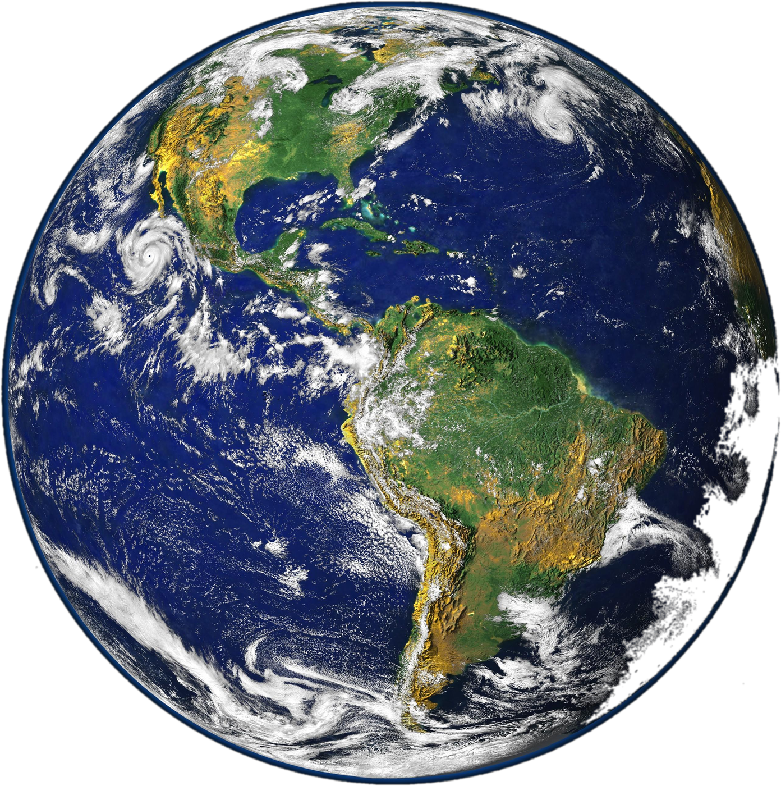
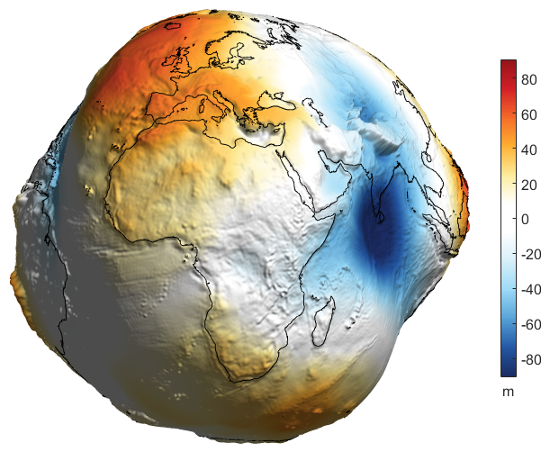
Left: NASA Blue Marble, Wikimedia Commons. Right: Geoid height (EGM2008, nmax=500), P. Bezděk, Astronomical Institute, Czech Academy of Sciences.
Modeling and Simulation for Geohazards
https://www.theuiaa.org/
Avalanches
https://www.bgs.ac.uk/
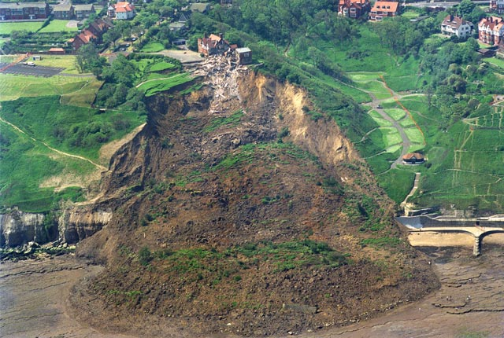
Landslides
https://www.thenationalherald.com/
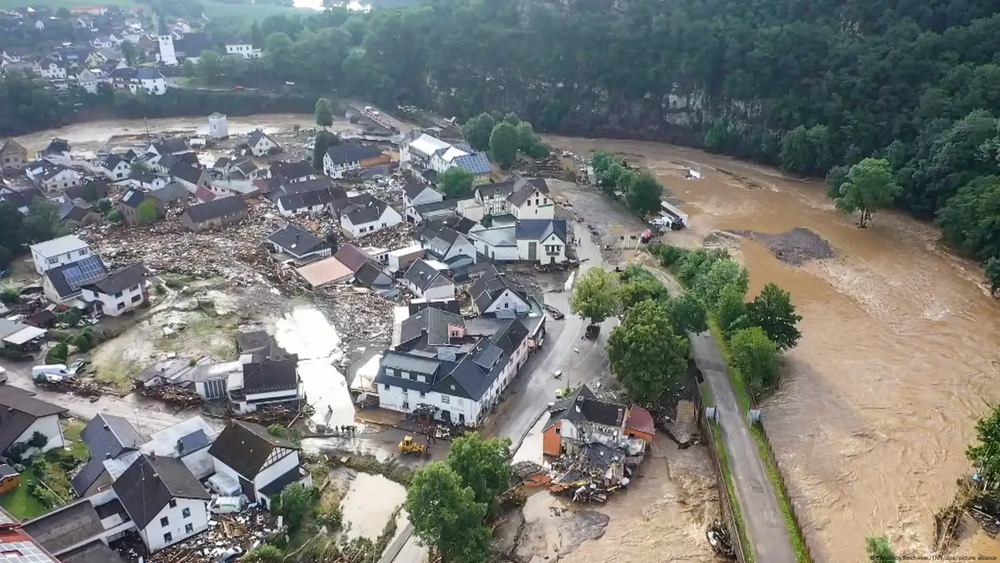
Flash Floods
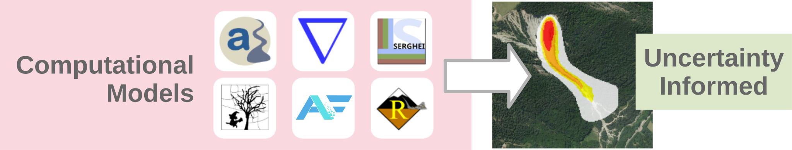
Hazard-map result: (Zhao and Kowalski 2020)
The Challenge
Uncertainty Informed Predictions
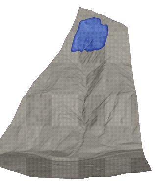
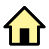
OpenFOAM-Avalanche (Rauter and Tuković 2018)
Monte-Carlo (MC) Method
- + Arbitrary input distributions
- - Curse of dimensionality
- - Multiple simulation runs required
- - Resource and time intensive
Surrogate Model
- + Reduced resource usage & time
- - Parametrized by few inputs
- - New geometry requires retraining
- - Infeasible to fully parametrize
Research Question
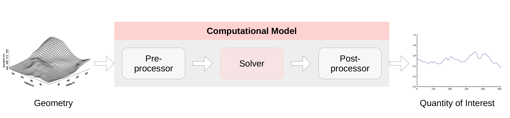
\(\sigma^2_{\text{Inputs}}\)
How can we propagate uncertainties in high-dimensional inputs through the computational model?
\(\sigma^2_{\text{Output}}\)
Resource Efficient
First-Order Second-Moment Method
\[ \text{Var}(F(X_1, \dots, X_N)) = \sigma_F^2 \approx \mathbf{g}^T \, \Sigma \, \mathbf{g} \]
\[ \Sigma = \text{Cov}(X_1, \dots, X_N) \]
\[ \mathbf{g} = \left[ \frac{\partial F}{\partial \mathbb{E}(X_1)}, \dots, \frac{\partial F}{\partial \mathbb{E}(X_N)} \right]^T \]
Computing Gradients: \(\mathbf{g}\)
- Finite Differencing
- Curse of dimensionality
- Inaccurate or unstable
- Algorithmic/Automatic Differentiation (AD)
- Accurate up to machine precision
- Forward Mode (Tangent): \(n_{\text{inputs}} \ll n_{\text{outputs}}\)
- Reverse Mode (Adjoint): \(n_{\text{inputs}} \gg n_{\text{outputs}}\)
GlissADe.jl
The Mathematical Model
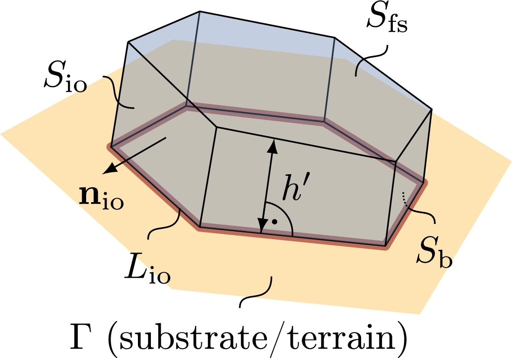
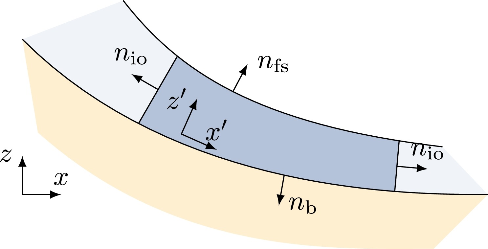
Surface-aligned, depth-integrated Savage-Hutter equations (Rauter and Tuković 2018)
Implementation
Spatial Discretization
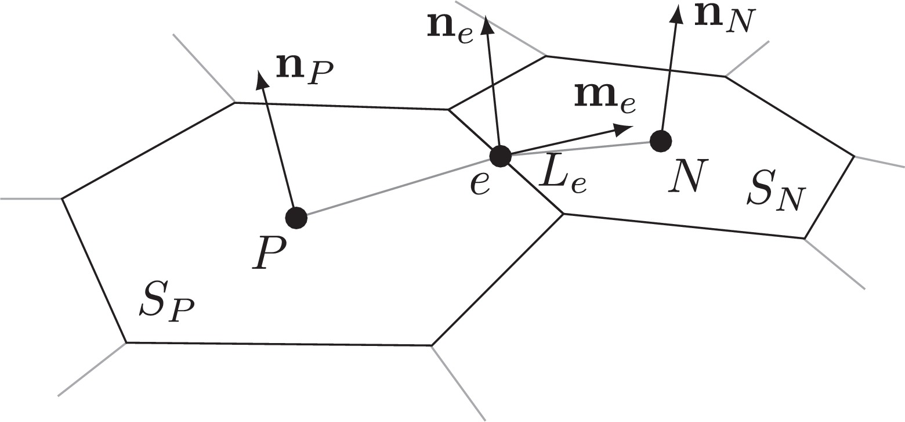
- Cell-centered fields on an unstructured mesh
- Edge values are computed from neighbouring cells, upwind or central
Implicit Time Stepping
Explicit Time Stepping
%%{init: {'theme':'neutral', 'themeVariables': {'fontSize': '13px'}}}%%
flowchart TD
Init[Solver Initialization]
S[Evaluate Stage Derivatives]
C[Combine Stages, Update State]
Init --> S --> C
C -->|Next timestep| Init
Differentiability
Mechanism
- Geometry and state each carry their own type:
- Swap
Float64forForwardDiff.DualinTorW:
- Custom chain-rule for the linear solve, reusing one factorization per direction (Martins and Ning 2021):
\[ A\,\dot{x} = \dot{b} - \dot{A}\,x \]
Capability
- Sensitivity to initial conditions or model parameters:
- Sensitivity to the mesh itself, one vertex at a time:
Caveat: differentiating w.r.t. vertex coordinates is slow due to ForwardDiff.
Computed gradients were checked against central finite differences.
Showcase
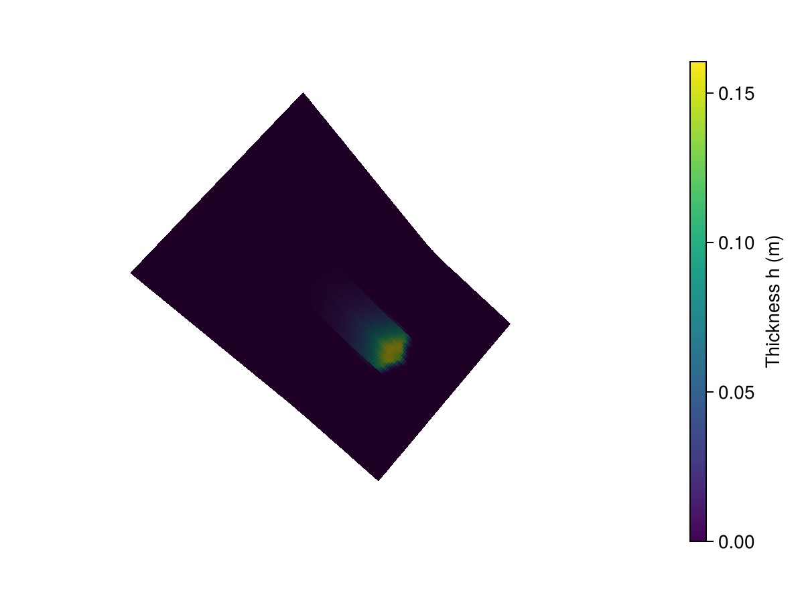

Roadmap
Today
- Forward-mode only, feasible only for a small number of parameters, not for thousands of mesh nodes
- Linear solve: single core, sequential Krylov + ILU
- Working prototype, not production
Next
- Geometric UQ: raster DEM vs. unstructured mesh
- Reverse-mode AD via
Enzyme.jl, checkpointed withCheckpointing.jl(Moses et al. 2026)
Reactant.jlcompilation for acceleration
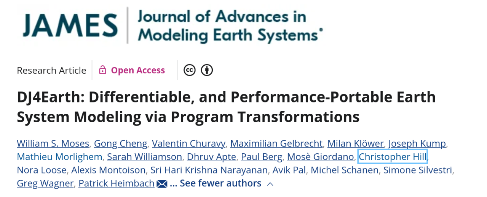
Oceananigans.jl
ShallowWaters.jl
SpeedyWeather.jl
DJUICE.jl
Thank You!
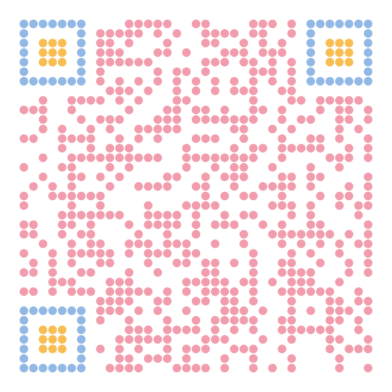
GlissADe.jl
Financial support from the Deutsche Forschungsgemeinschaft (DFG) through grant IRTG-2379 is gratefully acknowledged.
References
Martins, Joaquim R. R. A., and Andrew Ning. 2021. Engineering Design Optimization. Cambridge University Press. https://mdobook.github.io.
Moses, William S., Gong Cheng, Valentin Churavy, et al. 2026. “DJ4Earth: Differentiable, and Performance-Portable Earth System Modeling via Program Transformations.” Journal of Advances in Modeling Earth Systems 18: e2025MS005615. https://doi.org/10.1029/2025MS005615.
Rauter, Matthias, and Željko Tuković. 2018. “A Finite Area Scheme for Shallow Granular Flows on Three-Dimensional Surfaces.” Computers & Fluids 166: 184–99. https://doi.org/10.1016/j.compfluid.2018.02.017.
Zhao, Hu, and Julia Kowalski. 2020. “Topographic Uncertainty Quantification for Flow-Like Landslide Models via Stochastic Simulations.” Natural Hazards and Earth System Sciences 20: 1441–61. https://doi.org/10.5194/nhess-20-1441-2020.
GlissADe.jl // JuliaCon2026